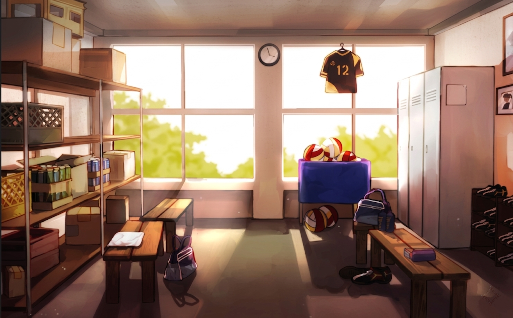

There are several game modes available in The Spike : Cross, each offering a unique way to play and experience the game. Currently there are 6 game modes to choose from, 7 including the current event (The Western Event). Although there are many ways to play, PvP is still not available in the current update and is still in development.
In Story mode, the player follows the narrative of Siwoo Baek and his journey into volleyball. Currently, the story mode has 12 chapters available, seperated into 2 seasons. Each chapter consists of several matches that the player must complete to progress through the story. The story mode is designed to provide an engaging and immersive experience, allowing players to connect with the characters and the world of The Spike : Cross.
In this gamemode, the player will compete in a tournament setting against other teams. The player will have to win 2 matches to enter the Championship round in which the player will be rewarded with the in-game currency.
In Phantom League, the player takes on the underground volleyball league. Currently housing 14 leagues, each seperated into 5 matches and each league offering unique rules (e.g., counter receives where you have to time your recieve for when the ball gets close to you).
In this gamemode, the player will compete in a gladatorial setting against other players in which points are based on how many lives you have and losing a point means losing one life. Not only that in the very first match debuffs will be assigned to each team and throughout the tournament you will gain buffs.
In Phantom Arena, the player will choose players that they own into a roulette like setting then once the players given to them, they will compete in a time-based challenge where they must complete each round within 10 minutes, each round consists of 5 matches where each match is in a first-to-5 point format except for the 5th match where its first-to-8, and before each match the player will be given the choice for a buff similar to The Colosseum. There are 3 rounds and each round completed the difficulty will increase drastically
In this gamemode, the player will compete in a snowy mountain against another team where the players performance will depend on the temperature they have, the lower the temperature, the worse the performance. Players will start with the base temperature 37 degrees Celsius. The point system is a first-to-15 format and every 3 points scored the player will choose between 3 buffs and will play by the counter recieve rules.